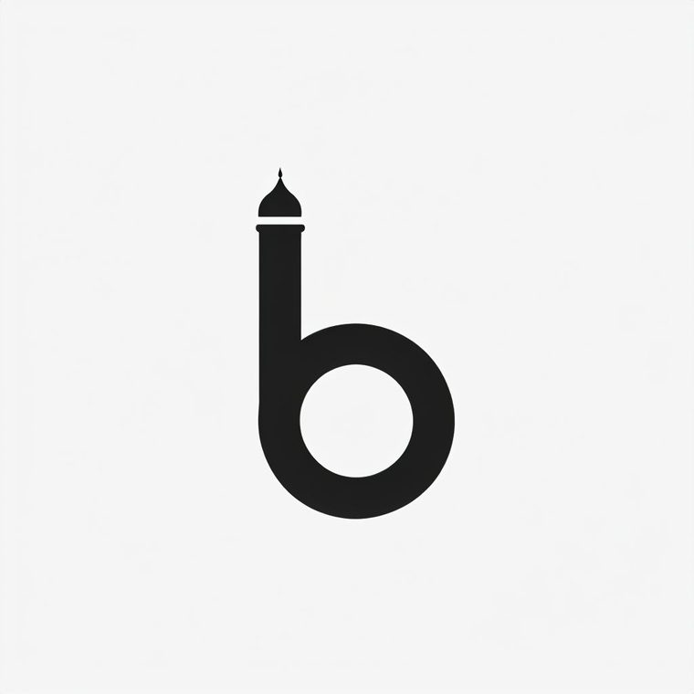

if you hear the athan out loud according to Jama'ah times will it prompt you to attend Jama'ah in the masjid? can we recreate that same behaviour that the muezzin actually calls you to? we're calling this project Bilal. and we're so excited to share more iA
